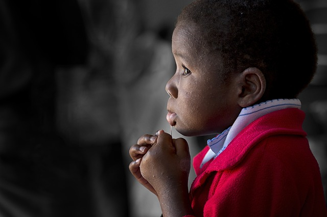
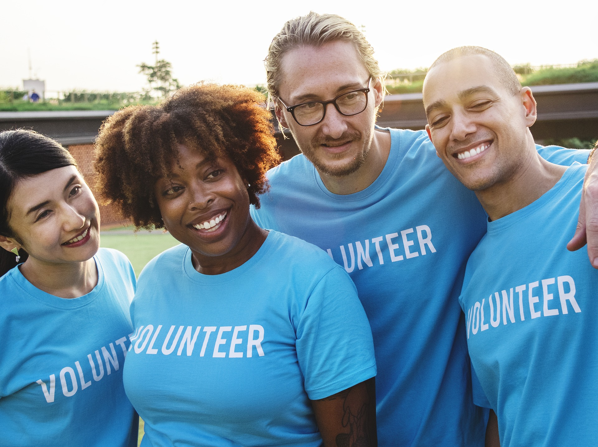
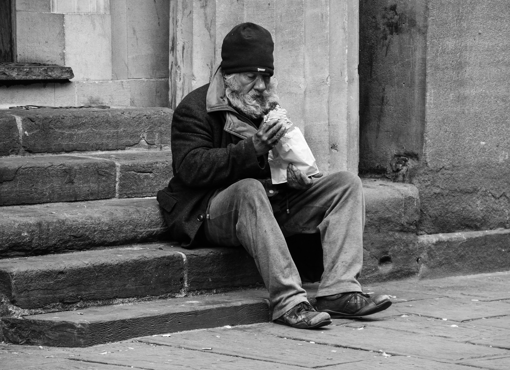
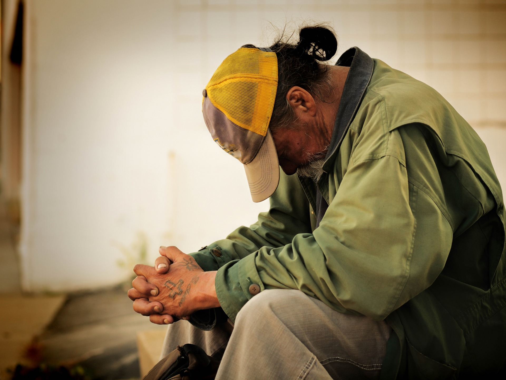

une ONG qui ... ... Soutient ici ceux qui se bougent là-bas, pour défendre leurs droits en matière de travail et de protection sociale. Ils sont des milliards à lutter chaque jour pour une vie plus décente et meilleure partout dans le monde. Ce sont des
hommes, des femmes et des jeunes qui prennent courageusement leur sort en main. Notre organisation leur apporte un soutien technique et financier structurels pour leur permettre de s’organiser pour défendre eux-mêmes leurs droits.
Renforce les mouvements sociaux dans les pays en développement
Face à une situation de grande pauvreté et de non-droits, Solidarité Mondiale identifie et soutient des mouvements sociaux qui luttent en faveur des groupes marginalisés, pour qu’ils puissent revendiquer et bénéficier de leurs droits sociaux
et syndicaux, et avoir accès aux soins de santé et à une protection sociale décente.
Solidarité Mondiale est l’ONG du Mouvement Ouvrier Chrétien et de ses organisations membres :
la Confédération des Syndicats Chrétiens (CSC)
l’Alliance Nationale des Mutualités Chrétiennes (ANMC)
Vie Féminine
les Equipes Populaires
les Jeunes Organisés et Combatifs
Une minorité de nantis vs une majorité de démunis ? Un discours marquant !

Uzziel Twagilimana, Coordinateur de Programme Continental pour Solidarité Mondiale, a pris la parole lors de la séance plénière du Forum Politique de Haut Niveau (FPHN) sur la révision de l’objectif de développent durable (ODD ou SDG) n°10, à savoir la
réduction des inégalités. Retour sur son discours marquant !
Une nouvelle Convention pour protéger les travailleur.euse.s

Pour son centenaire, l’OIT a frappé un grand coup : la Convention 190 sur la violence au travail a été adoptée ! La commission normative de l’Organisation Internationale du Travail (OIT) a adopté le vendredi 21 juin 2019 la Convention 190 et la Recommandation
206...
Une nouvelle Convention pour protéger les travailleur.euse.s

Pour son centenaire, l’OIT a frappé un grand coup : la Convention 190 sur la violence au travail a été adoptée ! La commission normative de l’Organisation Internationale du Travail (OIT) a adopté le vendredi 21 juin 2019 la Convention 190 et la Recommandation
206...
Une nouvelle Convention pour protéger les travailleur.euse.s

Pour son centenaire, l’OIT a frappé un grand coup : la Convention 190 sur la violence au travail a été adoptée ! La commission normative de l’Organisation Internationale du Travail (OIT) a adopté le vendredi 21 juin 2019 la Convention 190 et la Recommandation
206...
Comment travaillons nous et avec qui ?
Solidarité Mondiale (WSM) s’efforce de placer le droit à la protection sociale et le respect des droits du travail en tête des priorités de l’agenda politique en Belgique mais aussi aux niveaux européen et international. Entourée de ses partenaires de
la CSC (Confédération des Syndicats Chrétiens) et de la Mutualité Chrétienne, Solidarité Mondiale (WSM) peut également compter sur un réseau thématique international de 82 partenaires qui unissent leur force pour partager leurs connaissances
et faire pression sur les décideurs politiques du monde entier afin de faire avancer ces droits.
Pour se faire, Solidarité Mondiale (WSM) produit des analyses et recherches sur ces thématiques afin d’alimenter la réflexion des différents acteurs concernés, organise des séminaires et réunions d’informations et met en avant les stratégies innovatrices
de ses 82 partenaires qui servent ainsi d’exemple à suivre pour la réalisation de ces droits.
Avec la CSC, Solidarité Mondiale (WSM) est particulièrement active auprès de l’Organisation Internationale du Travail (OIT). Elle y mène un travail de plaidoyer intense, afin de mettre en avant le droit à la protection social, la nécessité de formalisation
des travailleurs précaires, les droits des femmes ainsi que le respect des droits humains dans les activités des multinationales et de leurs chaînes d’approvisionnement mondiales.
Pour ce qui est de l’avenir, il ne s’agit pas de le prévoir, mais de le rendre possible.
Antoine de Saint-Exupéry
Notre dernière action
L’ICE est un instrument de démocratie participative qui existe depuis 2012. A travers elle, des citoyens peuvent mettre une question au programme politique de la Commission européenne en rassemblant un million de signatures venant d’au moins sept États
membres de l’UE. Dès lors qu’on atteint ce chiffre de 1 million de signatures, la Commission européenne sera obligée d’étudier la problématique et pourra élaborer une proposition de loi. Les organisateurs de l’Initiative seront invités
à débattre de leurs propositions devant le Parlement Européen réuni en session plénière.